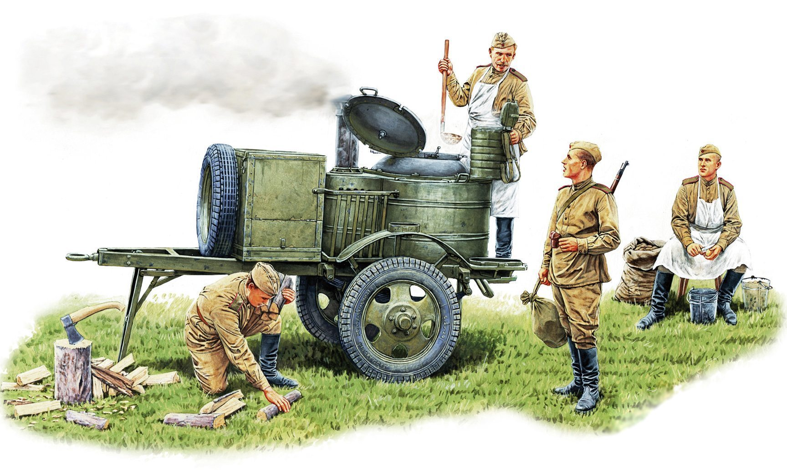
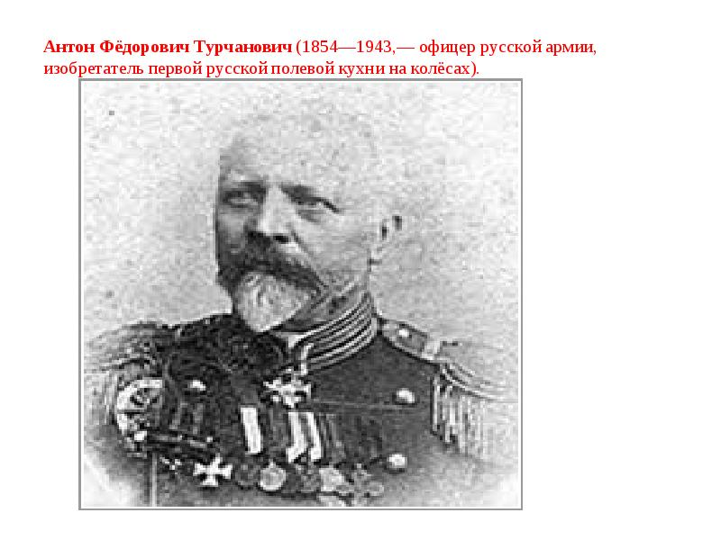
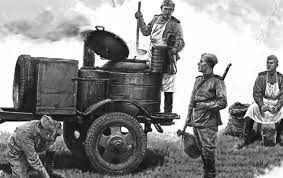
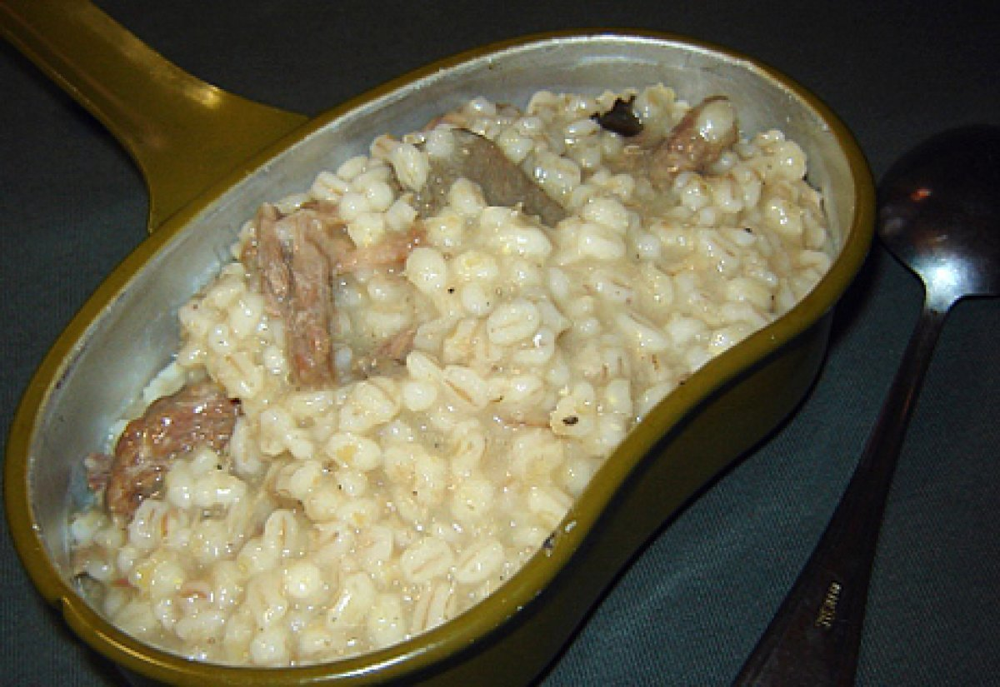
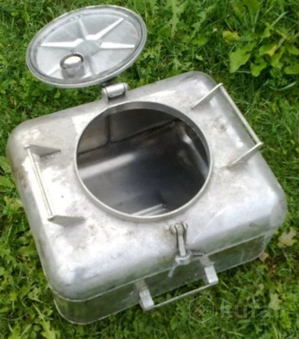
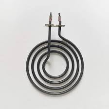
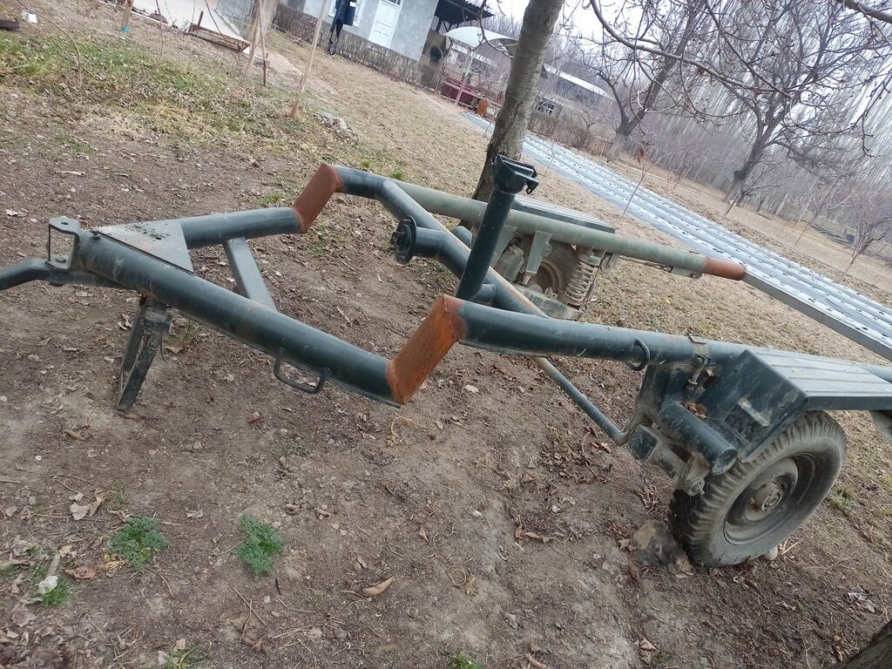
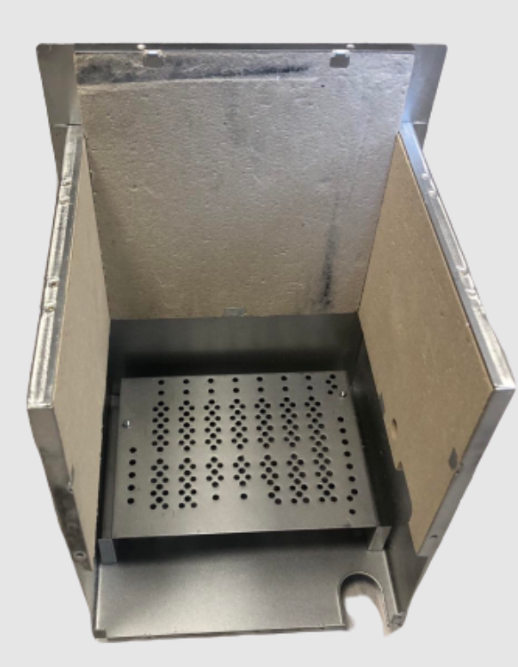

Полевая кухня
Полевая кухня, также известная как полевая кулинарная установка или полевая кулинарная система, разработана для обеспечения питания в условиях полевых условий, таких как военные операции, кемпинги, экспедиции и т. д. Она может быть использована в различных странах и сферах деятельности, начиная от военных подразделений до походных групп. История полевой кухни ведет свои корни от древних времен, когда люди начали понимать, что для обеспечения себя едой в полевых условиях требуется специальное оборудование. Однако современные полевые кухни, как мы их знаем сегодня, стали развиваться в XIX-XX веках. Военные конфликты часто стимулировали разработку и усовершенствование полевых кухонь, так как обеспечение воинов качественной и питательной пищей имеет критическое значение для их боеспособности и выживаемости. Каждая армия разрабатывает свои системы полевого питания, история которых варьируется в зависимости от страны и эпохи. Таким образом, трудно определить конкретного человека или организацию, которые "придумали" полевую кухню в ее современном представлении. Это скорее результат эволюции и непрерывного улучшения кулинарного оборудования для использования в полевых условиях.
Что это?
Полевая кухня – это переносной кулинарный комплекс, предназначенный для приготовления пищи в условиях полевых условий, таких как военные операции, походы, кемпинги и прочее. Она разработана для обеспечения возможности приготовления еды на месте, где отсутствует доступ к обычным кухонным условиям.
История и использование
Полевые кухни имеют долгую историю и широкое распространение в различных культурах и сферах. Они были использованы в различных армиях и экспедициях по всему миру. Вот некоторые ключевые моменты:
Изобретатель:
История:
Полевые кухни имеют свои корни в древние времена, когда войска и путешественники были вынуждены готовить пищу на месте, используя простые инструменты и доступные материалы. Однако, с развитием технологий, полевые кухни стали более развитыми и эффективными.
Применение в разных странах
Полевые кухни использовались в различных странах по всему миру, включая США, Россию, Великобританию, Германию и другие. Они играли важную роль в военных операциях, крупных экспедициях, а также в ряде гражданских мероприятий.
Первые использования
Точные сведения о первом использовании полевых кухонь сложно установить из-за их древней истории, но можно предположить, что подобные конструкции были созданы сразу же, как только возникла потребность в приготовлении пищи в полевых условиях.
В Русской императорской армии
- В феврале 1866 года в Варшаве при лейб-гвардии Литовском полку был испытан «кухонный аппарат», предложенный варшавским купцом Юлианом Альфонсовичем Паричко. «Аппарат» представлял из себя деревянный ушат (котёл), стянутый железными обручами и с железным дном. Через центр котла проходила дымовая труба от очага, расположенного под ним, железные детали в местах соприкосновения с пищей покрывались глазурью. После испытаний, показавших недостатки деревянного котла, в июне того же года был испытан усовершенствованный образец «аппарата», уже из двух котлов (большого — для щей и малого — для каши), покрытых изнутри лужёным железом и медью. В ходе дальнейших испытаний котёл для каши был сделан с двойными стенками, между которыми заливалась вода. Испытательная комиссия одобрила результаты опытов, приготовленные в «аппарате» щи и каша не уступали в качестве приготовленным в обычных котлах, времени и топлива на готовку требовалось меньше, при этом готовить пищу можно было на марше. Для транспортировки «аппарата» требовалась повозка с двумя лошадьми.
- В ноябре—декабре 1867 года «аппарат» Паричко испытывался в Санкт-Петербурге особой комиссией, а затем обозной комиссией. В 1868 году в Варшаве был построен второй экземпляр для продолжения испытаний при лейб-гвардии Литовском полку, а в 1870 году — третий экземпляр, который в 1872—1873 годах вновь испытывался в Санкт-Петербурге. В результате было постановлено построить 10 экземпляров «аппарата» для отправки в военные округа для испытаний. Чем закончились испытания «аппарата» Паричко, нет сведений, но для армии он не был принят.
- В 1870-х годах испытывались образцы походных кухонь полковника Никифорова и М. А. Лишина. Во время Русско-турецкой войны 1877—1878 годов несколько полков Русской армии были снабжены кухнями Никифорова для испытания в боевых условиях. Также в действующую армию были отправлены 10 экземпляров кухни Михаила Лишина. Испытания показали, что подвижные походные кухни удобнее и экономичнее при приготовлении пищи, чем использовавшиеся в армии артельные котлы. Однако консервативность российской военно-бюрократической машины не позволила ввести по итогам войны с Турцией походные кухни для снабжения армии.
- Вновь вопрос о походных кухнях был поднят в конце XIX века. В 1893 году в частях одесского гарнизона испытывалась кухня системы Якова Фриедланда. В 1896 году Главное интендантское управление объявило конкурс на создание новых образцов подвижных походных кухонь. На конкурс были представлены 15 образцов: Станислава-Хенрика Бруна (сына основателя варшавской фирмы Крыштофа Бруна), М. Богаевского, де-Тиллота, Никифорова, Савримовича и др. Конкурс не выявил победителя, но наиболее разработанными были признаны однокотловые четырёхколёсная пехотно-артиллерийская и двухколёсная кавалерийская кухни системы «К. Брун и Сын» (варшавская фирма «Крыштоф Брун и Сын»), которые в 1898 году были рекомендованы для обязательных закупок в воинские части. Воинские части должны были самостоятельно закупать их на свои «экономические суммы».
- «Боевое крещение» кухни Бруна получили во время Китайского похода 1900—1901 годов. И хотя испытания показали имеющиеся недостатки, такие как тяжеловесность, неповоротливость, нехватка второго котла, Высочайшим повелением 30 января 1901 года их введение в войсках было утверждено. В то же время перед Русско-японской войной многие полки закупали кухни системы М. Богаевского и других систем, что вышестоящим начальством пресекалось. При этом, ввиду дороговизны кухонь и их ремонта, в мирное время использовать походные кухни разрешалось только во время подвижных сборов и манёвров.
- Во время Русско-японской войны походными кухнями были снабжены практически все части действующей армии: «Только в некоторых частях, и то в исключительных случаях, практиковалась варка пищи в походных котелках и чугунных пищеварных котлах, в большинстве пехотных и кавалерийских частей пища готовилась в походных кухнях. Благодаря кухням люди довольствовались горячей пищей не только на стоянках, но даже на передовых позициях и при передвижениях».
- Изобретатели продолжали предлагать новые образцы походных кухонь. Образцы облегчённых походных кухонь были представлены фирмой «Крыштоф Брун и Сын», полковником Богаевским (изделие механического завода О. П. Пастора), капитаном В. К. Микини (изделие завода Зотова), Вагоностроительным заводом, полковником Добронравовым (изделие завода «Технолог»), подполковником Турчановичем. Эти образцы, большинство из которых были однокотловыми, не получили одобрения и не были приняты.
- Вопрос о выработке двухкотловой пехотно-артиллерийской кухни продолжал прорабатываться в Главном интендантском управлении. На новые испытания были представлены построенные по проекту штабс-ротмистра Маргушина 8 образцов четырёхколёсных кухонь: Путиловского завода, механического завода О. П. Пастора, фирмы «Крыштов Брун и Сын» и Вагоностроительного завода. Однако все они из-за большого веса также не были одобрены.
- В 1907 году походные кухни были включены в штатный состав войсковых обозов и стали закупаться за казённый счёт, а не из «экономических сумм» частей.
- В 1910 году для снабжения войск был принят облегчённый образец однокотловой четырёхколёсной пехотно-артиллерийской кухни системы штабс-ротмистра Маргушина, которой, вместе с кухнями системы «К. Брун и Сын» (принятых в 1898 году), и снабжалась Русская императорская армия вплоть до конца её существования. Горно-артиллерийские части снабжались вьючной кухней системы Грум-Гржимайло, одобренной в 1912 году.
Принцип работы и устройство
Принцип работы полевой кухни основан на обеспечении возможности быстрого и эффективного приготовления пищи в условиях полевых мероприятий, таких как военные действия, кемпинги или экспедиции. Внутреннее устройство полевой кухни разрабатывается с учетом необходимости максимальной функциональности при минимальных затратах времени и ресурсов. Вот более подробное описание основных элементов устройства полевой кухни:
Кухонный блок:
Это основная часть полевой кухни, в которой находятся горелки или другие источники тепла для приготовления пищи. Кухонные блоки могут иметь различные конструкции в зависимости от типа и модели полевой кухни. Обычно они изготавливаются из прочных металлических материалов, таких как нержавеющая сталь, чтобы обеспечить долговечность и устойчивость к внешним воздействиям.
Поверхности для приготовления:
Эти поверхности представляют собой столешницы, на которых проводится процесс приготовления пищи. Они могут быть складными или выдвижными, что позволяет экономить место при транспортировке и хранении полевой кухни. Обычно поверхности для приготовления изготавливаются из материалов, устойчивых к высоким температурам и легко моющихся, таких как нержавеющая сталь.
Контейнеры для хранения и оборудования:
В полевой кухне предусматриваются специальные отделения или контейнеры для хранения продуктов питания, посуды, кухонных принадлежностей и прочего оборудования. Это помогает организовать рабочее пространство и обеспечить удобный доступ к необходимым инструментам и ингредиентам во время приготовления пищи.
Все эти элементы совместно обеспечивают функциональность и удобство использования полевой кухни, позволяя эффективно обеспечивать пищей группы людей в условиях, где нет доступа к обычной кухонной инфраструктуре.
Топливо и приготовляемые блюда в полевой кухне
Полевая кухня, важный элемент в условиях экспедиций, военных действий или кемпингов, работает на разнообразных источниках топлива, обеспечивая приготовление различных блюд для группы людей. Она представляет собой инженерную конструкцию, сочетающую в себе эффективность, удобство и надежность.
Одним из наиболее распространенных видов топлива для полевых кухонь является пропан. Этот газ является надежным и удобным источником энергии, обеспечивающим стабильное горение при приготовлении пищи. Его легко хранить и транспортировать, что делает его идеальным выбором для использования в полевых условиях.
Тем не менее, полевые кухни также могут работать на древесных отходах, таких как дрова или уголь. Этот вариант особенно полезен в ситуациях, когда доступ к пропану ограничен или отсутствует. Использование древесных отходов добавляет элемент природности и экологичности в приготовление пищи на полевой кухне.
В современных моделях полевых кухонь можно также встретить электрические горелки или нагревательные элементы. Этот вариант подходит для условий, где имеется доступ к электрической сети. Он обеспечивает удобство использования и эффективность приготовления пищи.
Что касается ассортимента приготавливаемых блюд, полевая кухня не ограничивает кулинарные фантазии. Здесь можно приготовить разнообразные супы и бульоны, вкусные гарниры и каши, ароматные мясные и рыбные блюда, различные закуски и выпечку, а также разнообразные напитки и десерты. Благодаря разнообразию используемых топлив и готовых блюд, полевая кухня является незаменимым помощником в обеспечении питания в условиях отсутствия обычной кухонной инфраструктуры.
Пример простейшей пищи из полевой кухни:
Необходимое для работы:
Основные модули:
Котел
Спираль
Прицеп
Камера сгорания
